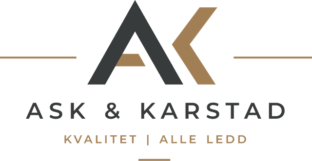
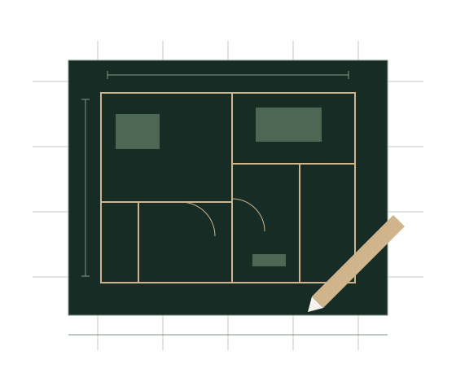

01 /
Plan, fasade og snitt
Tegninger som viser rom, uttrykk og sammenhenger. Omfang og nødvendig oppmåling avtales før arbeidet starter.

Tegninger og prosjektering
Gode tegninger gjør idéene konkrete. Vi hjelper deg med planløsning, tegningsunderlag og byggetekniske avklaringer før du går videre.
Bergen & Bjørnafjorden · Bygg og ingeniørtjenester
SKISSE & HÅNDVERK / Tegninger og prosjektering

Konseptillustrasjon · Ikke et referanseprosjekt
Et gjennomtenkt utgangspunkt
En tegning skal gjøre det lettere å ta beslutninger og kommunisere om prosjektet. Vi utvikler underlag for nybygg, tilbygg og ombygging, med innhold og detaljeringsnivå tilpasset formålet. Oppdraget kan omfatte tegninger, visualisering og prosjektering innen våre aktuelle kompetanseområder.
Skisser, søknadstegninger og arbeidstegninger har ulike formål. Vi avklarer hva underlaget skal brukes til, og hvilke fag som må involveres.
Dette er nyttig å ha klart
Eksisterende tegninger, bilder, mål og ønskene dine for rommene. Fortell også om underlaget skal brukes til søknad eller utførelse.
Avtalte leveranser
01 /
Tegninger som viser rom, uttrykk og sammenhenger. Omfang og nødvendig oppmåling avtales før arbeidet starter.
02 /
Modeller og illustrasjoner kan gjøre volum, rom og alternative løsninger lettere å forstå før du velger.
03 /
Byggetekniske vurderinger og prosjektering innen avtalte fagområder. Behov for andre rådgivere avklares tidlig.
Slik arbeider vi
Formålet styrer underlaget. Vi avtaler nivå, revisjoner og leveranse slik at tegningene kan brukes i den videre prosessen.
01 /
Vi går gjennom bruk, ønsker og eksisterende underlag. Behov for oppmåling vurderes.
02 /
Planer og aktuelle alternativer gjennomgås med deg. Tekniske spørsmål og faggrenser avklares.
03 /
Avtalte tegninger og modeller leveres til det formålet vi har definert sammen.
Før vi setter i gang
Vi kan bistå med planlegging og tegninger for ombygging. Eksisterende underlag og behov for oppmåling må vurderes først.
Søknadstegninger viser normalt tiltaket for byggesaken. Utførelsen kan kreve mer detaljert prosjektering og arbeidstegninger. Vi avklarer leveransen og behovet for andre fag.
3D-modellering og visualisering kan inngå i oppdraget. Vi avtaler hva modellen skal vise og hvilket detaljeringsnivå du trenger.
Prisen avhenger av underlag, størrelse, kompleksitet og leveranse. Send det du har, så kan vi vurdere omfanget før et tilbud.
La oss snakke om prosjektet ditt
Send oss idéene og underlaget ditt. Sammen finner vi ut hvilke tegninger som gir prosjektet et godt neste steg.